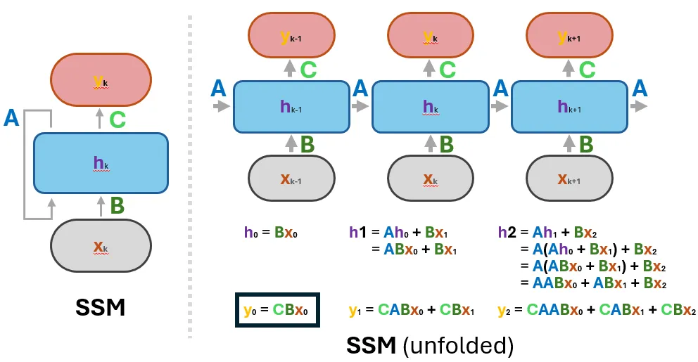

🚀 The State Space Models
Brief Historical Context
The story of State Space Models (SSMs) is a fascinating journey that spans over six decades, from the Space Race to today's cutting-edge AI models like Mamba. Let's explore how a mathematical framework designed to guide rockets became a cornerstone of modern sequence modeling.
🌔 The Space Race and Beyond
In the early 1960s, as NASA was racing to put humans on the moon, they faced a critical challenge: how to precisely track and control spacecraft trajectories. Meanwhile, a breakthrough was emerging from the work of Rudolf Kalman, whose elegant mathematical framework for control theory would far outlive its original purpose. Indeed, in 1960, Kalman introduced what we now know as State Space Models.
The core idea was elegant yet powerful: any system could be described by its "state" (like the position and velocity of a spacecraft) and how this state evolves over time. The mathematics behind SSMs provided a way to estimate these states even with noisy measurements – crucial for keeping Apollo missions on course .
Throughout the 1970s and 1980s, SSMs expanded beyond aerospace into diverse fields. Engineers deployed them to control chemical plants and robotic systems, while economists adopted them for financial forecasting. Their ability to handle complex, dynamic systems while managing uncertainty made them invaluable across industries.
📈 The SSMs in the Machine Learning Era
As machine learning gained momentum in the 1990s and 2000s, researchers noticed parallels between SSMs and popular AI architectures. Hidden Markov Models, widely used in speech recognition, could be viewed as discrete versions of SSMs. Recurrent Neural Networks (RNNs), the early workhorses of sequence modeling, shared similar mathematical foundations.
However, SSMs remained largely in the background of deep learning, overshadowed by architectures like Long Short-Term Memory (LSTM) networks and, later, Transformers. The computational tools and hardware needed to efficiently implement continuous-time SSMs in neural networks were unavailable.
The real breakthrough came in the 2020s. As researchers grappled with the limitations of Transformer architectures – particularly their quadratic memory scaling – they began looking for alternatives. The S4 (Structured State Space Sequence) model demonstrated that SSMs could be efficiently implemented in deep learning architectures, achieving remarkable performance on long-sequence tasks.
This sparked a renaissance in SSM research. The mathematical foundations laid down during the Space Race were being reinvented with modern deep-learning techniques. The culmination of this evolution is the Mamba architecture, which combines the efficiency of SSMs with selective state spaces, offering a compelling alternative to attention-based models.
After this brief recap about where SSMs came from, we can now dive into how they actually work. In the next section, we’ll explore the core mathematical components of SSMs through a practical example, illustrating how the concept of an internal “state” allows these models to handle everything from noisy sensor readings to complex time-series predictions.
The State Space Models
State Space Models (SSMs) are a versatile mathematical framework used to describe dynamic systems. At their core, SSMs capture how a system evolves over time through a set of internal states influenced by external inputs while providing observable outputs that depend on these states. This framework is built on two main equations:
- State Equation: $$h'(t) = Ah(t) + Bx(t)$$
This equation describes how the system's internal state ($h'(t)$) evolves over time under the influence of its current state ($h(t)$) and external inputs ($x(t)$).
- Observation Equation: $$y(t)=Ch(t)+Dx(t)$$
This equation maps the internal state ($h(t)$) and the current input ($x(t)$) to observable outputs ($y(t)$), providing a way to measure the system's behavior.
SSMs are extensively applied in fields like physics, engineering, economics, and machine learning, where understanding and predicting system behavior is essential.
The next chapter will introduce two illustrative examples to contextualize the concepts: one rooted in physics, showcasing a continuous-time SSM, and another more heuristic, featuring a discrete-time SSM through the racing car analogy. After exploring these examples, we will delve into the mathematical details of SSMs, examining their features, discretization methods, and dual representation as recurrent models and convolutional operations.
🪝 Mass-Spring-Damper System
Consider a mass-spring-damper system where a mass ($m$) is attached to a fixed wall by a spring with elastic constant $k$ and a damper with friction coefficient $b$. The system's position ($y(t)$) evolves over time as a varying external force ($x(t)$) is applied to the mass.
The motion of the system is governed by Newton's second law of motion:
$$F(t) = x(t)-by'(t)-ky(t),\quad \text{and} $$ $$F(t) = ma(t)$$
By substituting the first equation in the second and bearing in mind that the velocity is the first derivative of the position ($v(t)=\frac{d}{dt}y(t)$), and the acceleration is, in turn, its derivative ($a(t)=\frac{dy}{d^2t}(t)$) we obtain:
$$m\frac{d^2}{d^2t}y(t)= x(t) -b\frac{d}{dt}y(t)-ky(t)$$This is a second-order ODE, which we can convert into a system of two first-order equations by making explicit use of the velocity $y'(t)$:
$$\frac{d}{dt}y(t)=y'(t) \Rightarrow \frac{d^2}{dt}y(t)=\frac{d}{dt}y'(t)$$ $$ \begin{cases} \frac{d}{dt}y(t)= y'(t) \\ m\frac{d}{dt}y'(t)= x(t) -by'(t)-ky(t) \end{cases} $$Dividing both sides of the second equation by $m$:
$$ \begin{cases} \frac{d}{dt}y(t)= y'(t) \\ \frac{d}{dt}y'(t)= \frac{1}{m}x(t) -\frac{b}{m}y'(t)-\frac{k}{m}y(t) \end{cases} $$Now we can notice that the state variable that controls the dynamic of the system are $(y(t), y'(t))$, thus we can rewrite the system in its matrix form by using the linearity of the derivation operator:
$$ \frac{d}{dt} \begin{pmatrix} y \\ y' \end{pmatrix}(t)= \begin{pmatrix} 0 & 1 \\ -\frac{k}{m} & -\frac{b}{m} \end{pmatrix} \begin{pmatrix} y \\ y' \end{pmatrix}(t)+ \begin{pmatrix} 0 \\ \frac{1}{m} \end{pmatrix}x(t) $$Identifying the state $h(t)$ with the state variable and observing that we solve the system by knowing the evolution of the position $y(t)$, that is:
$$ y(t)= \begin{pmatrix} 1 \\ 0 \end{pmatrix} \begin{pmatrix} y \\ y' \end{pmatrix}(t) $$We have reached the SSM form:
State Equation:
$$ \underbrace{\frac{d}{dt} \begin{pmatrix} y \\ y' \end{pmatrix}(t)}_{h'(t)} = \underbrace{ \begin{pmatrix} 0 & 1 \\ -\frac{k}{m} & -\frac{b}{m} \end{pmatrix} }_A \underbrace{ \begin{pmatrix} y \\ y' \end{pmatrix}(t) }_{h(t)} + \underbrace{ \begin{pmatrix} 0 \\ \frac{1}{m} \end{pmatrix} }_B x(t) $$Observation Equation:
$$ y(t) = \underbrace{ \begin{pmatrix} 1 \\ 0 \end{pmatrix} }_C \underbrace{ \begin{pmatrix} y \\ y' \end{pmatrix}(t) }_{h(t)} $$By fixing the values for all the constants and forces applied to the system, we can also resolve the problem. For example, choosing $m=1, b=5, k=40, x(t)=\max(\sin(x), 0.5)$ provides the following dynamic:
🏎️ The Racing Car example
Imagine having a racing car that you want to keep in a good state to win competitions. To do so, you have to monitor the car’s state daily and perform some operations to address any problems that can arise. In the context of SSMs, we can break down the dynamics of this process as follows:
- 🚗 Car’s wealth [$h_t$]:
- ⛽ Gas level: Determines how far and fast the car can go.
- 🛢️ Oil level: Critical for maintaining engine performance.
- 🛞 Tires’ wear: Affects grip and stability on the track.
- 🚨 Engine: Influences overall power and efficiency.
Over time, these components degrade due to usage and wear. Indeed, without interventions, the car’s state will naturally worsen. Thus, to maintain the car at an optimal state, some operations must be done on the car with a certain frequency. Let’s represent them:
- 🔧 Maintenance [$x_t$]:
- 🧪 Fluids filling: Refueling gas or replenishing oil.
- 🛠️ Reparations: Replacing tires or fixing engine issues.
These actions help restore or improve the car’s state, ensuring optimal performance.
- 🚀 Performance [$y_t$]:
- ⏩ Maximum Speed: Represents the observable output of the system.
When the car’s state is good, its maximum speed is high; performance declines as it deteriorates.
We will monitor this process daily, meaning that starting from a certain day, we will find a function that describes the dependencies between the performance of our car, its state, and the maintenance operations we do on it day after day.
First, you can notice that in the absence of any mechanical intervention, the car’s state will generally worsen day after day as the gas and oil levels will reduce, and the tires and motor conditions will deteriorate because of the use of the car. In other words, the state \( h_{t+1} \) of the car on a certain day depends on the previous state through a matrix \( A \):
$$ h_t = A h_{t-1} $$Now, every single day, you can choose what kind of maintenance you want to do on your car, which will again affect the state of the car. In other words, we can expand the previous equation by adding a term that takes care of the reparation you do on your car:
$$ h_t = Ah_{t-1} + Bx_{t} $$Finally, the performance will depend on how well the car does, so they directly depend on the current car’s state \( h_t \). Let’s thus introduce the matrix \( C \) that explicitly shows the dependency of the speed on the state:
$$ y_t = Ch_t $$For the sake of completeness, we can also think of a mapping between the maintenance and the performance as, for example, filling the gas will make the car weigh more, directly affecting the speed. Generally, this can be represented using a further matrix \( D \) and adding the term \( Dx_t \) in the last equation.
$$ y_t = Ch_t+Dx_t $$Leveraging these two equations, you can control the racing car's performance or, knowing the sequence of reparations that you perform on the car, even forecast its sequence of speeds for the future days.
This simple example provides a tangible introduction to the dynamics modeled by SSMs, illustrating how states, actions, and outputs are interconnected. We’re ready to explore more complex systems and their applications with this foundation.
📐 Mathematical Formalization
We have then summarized the interaction between these components in the two equations below:
$$ \overbrace{\begin{cases} h'(t) &= Ah(t) + Bx(t) \\ y_t &= Ch(t)+Dx(t) \end{cases}}^\text{Contonuous time}, \ \ \ \ \ \overbrace{\begin{cases} h_t &= Ah_{t-1} + Bx_{t} \\ y_t &= Ch_t+Dx_t \end{cases}}^\text{Discrete time} $$The two systems represent the cases where the evolution is described in continuous time (similar to the first example) or discrete-time (as in the racing car example).
Let’s have a more fine-grained look at the twos:
- State Equation:
The car’s state evolves daily based on its current state and any maintenance performed:- A: Captures the natural decay or persistence of the car’s state over time.
- B: Represents the impact of maintenance actions on the car’s state.
- Observation Equation:
The car’s performance depends directly on its current state:- C: Defines how each aspect of the internal state influences the performance.
- D: Represents the direct effects of the reparations on the speed.
Properties of State Space Models
Building on the intuitive example of the racing car, we now move to a more general and formal description of State Space Models (SSMs) in continuous time, which is essential for many real-world applications where processes evolve continuously rather than in discrete steps.
The General Continuous-Time Model
At their core, SSMs in continuous time describe the evolution of a system's internal state $h(t)$ over time, influenced by external inputs $x(t)$. The mathematical representation consists of two key equations:
The State Equation
$$ \frac{dh(t)}{dt}=Ah(t)+Bx(t) $$- $h(t)\in\mathbb{R}^n$ is the system’s internal state, a vector representing the key variables that describe the system at any given time. You can think of it as the memory of the system.
- $A\in\mathbb{R}^{n\times n}$ is the state transition matrix governing how the system evolves autonomously over time.
- $x(t)\in\mathbb{R}^m$ is the input array that represents the observations we feed to the model to obtain the result.
- $B\in\mathbb{R}^{n\times m}$ the input matrix that describes how each new input influences the system’s current state.
The Observation Equation
$$ y(t) = Ch(t)+Dx(t) $$- $y(t)\in\mathbb{R}^p$ is the observable output, capturing what we can measure from the system. It is also called the target variable.
- $C\in\mathbb{R}^{p\times n}$ is the observation matrix, linking the internal state to the outputs.
- $D\in\mathbb{R}^{p \times m}$ is a matrix that represents a skip connection, linking the last input to the outputs. Often, we can overlook this term as the input influences the hidden state, which, in turn, defines the final outcome.
The following figure describes the whole SSM!
It is worth noting that all the matrices just introduced do not depend on time, making the SSMs a time-invariant model. Moreover, we only use matrix multiplications to get the results, so we can acknowledge the SSMs as Linear Time Invariant (LTI) models.
From Continuous Time to Discrete Observations
Many real-world systems operate in continuous time, but digital computers inherently process data in discrete intervals. For instance, when monitoring a physical process like temperature changes (which is inherently a continuos-time phenomenon), we typically record measurements at fixed time intervals—say, every second or minute. Similarly, in machine learning, sequence models often work with time series or sampled signals, which are inherently discrete.
In its native form, the SSM equations describe continuous processes, evolving smoothly over time. However, to leverage SSMs in practical applications—whether for simulations, digital control systems, or sequence modeling—we need a way to bridge the gap between these continuous dynamics and the discrete nature of computational systems. This process, known as discretization, transforms continuous-time SSMs into a form suitable for handling discrete sequences while preserving the system’s dynamic behavior. As for the input, the discrete form of a continuous signal can simply be obtained by sampling at regular time intervals $\Delta t$.
This process, also known as discretization, approximates the continuous evolution of states at specific time intervals. Two common approaches to discretization are the Euler Method and the Zero-Order Hold (ZOH).
The Euler Method
The Euler Method provides a straightforward approximation of the state equation by assuming that the derivative is constant over the interval $\Delta t$. This leads to the following discretized equations:
$$ h_{t+1} \approx h_t + \Delta t (Ah_t + B x_t) $$Zero Order Hold
The ZOH approach assumes that the input $x(t)$ remains constant over each small interval $[t, t+\Delta t]$ (as depicted in the figure above). The discretized state equation becomes:
$$ h_{t+1} = \bar{A} h_t + \bar{B} x_t $$where:
$$ \bar{A} = \exp(A\Delta t),\ \ \ \ \ \ \bar{B} = \int_0^{\Delta t} [\exp(As)Bd]s $$This method is more accurate than the Euler Method for systems with non-negligible dynamics during each sampling period. In both cases, the Observation Equation does not require any modification:
$$ y_t = Ch_t+Dx_t $$The discretization bridges the gap between continuous theoretical models and their practical implementation in digital systems, enabling applications such as real-time simulations, control systems, and machine learning pipelines. Choosing the right discretization method can mean the difference between a simulation that mirrors reality and one that diverges wildly. For example, in real-time control systems, precise discretization ensures that interventions are accurately timed and effective, while in sequence modeling, it enables SSMs to efficiently process input sequences and generate meaningful predictions. In short, discretization unlocks the practical utility of SSMs across a wide range of digital applications.
Dual Nature of SSMs: Recurrent and Convolutional Representations
One of the unique strengths of State Space Models is their dual nature: they can be expressed both as recurrent models and as convolutional operations. This versatility makes SSMs particularly powerful in sequence modeling and signal processing.
Following this scheme, we can see that there is a pattern! In particular, the matrices \( \bar{A}, \bar{B} \) always multiply the inputs, and we can leverage this remark for a second characteristic representation of the SSMs.
- Convolution Representation:
The State-Space model can even be represented using the convolutional operation. Indeed, unfolding the SSM’s two main equations we found explicitly the multiplications we perform to calculate the output. Putting everything together, we can obtain the same result we got with the recurrent representation by using a fixed convolutional kernel that depends on the state transition and the input matrices. The calculations are shown below:
Thus, we can represent the SSM as a convolution with a 1-D Kernel with fixed length and some padding:
The convolutional form is particularly efficient for parallel computation, as it allows for batched operations across the entire sequence, making it suitable for modern hardware like GPUs.
Advantadges of SSMs against current architectures
As sequence modeling tasks grow increasingly complex—ranging from processing entire books to analyzing hours of video—limitations in current approaches become evident. RNNs , while efficient in terms of computation (their operations scale linearly with the input length as each step requires a fixed amount of time), struggle with retaining information over long sequences due to vanishing gradients. Transformers, on the other hand, excel at capturing long-range dependencies and allow for parallel computation across sequences, but their self-attention mechanism introduces quadratic memory and computational scaling, making them resource-intensive for very long inputs.
SSMs address these limitations by offering a framework that combines memory efficiency, scalability, and numerical stability. With their dual representation as recurrent and convolutional models, SSMs enable seamless processing of long-range dependencies while maintaining interpretability and fast computation.
Indeed, SSMs overcome the major limitations of traditional architectures like RNNs and Transformers when modeling long sequences:
- Memory Efficiency
- RNNs: Struggle to retain information across long sequences due to the vanishing gradient problem, limiting their effective memory. Moreover, their training cannot be parallelized due to the need of sequentially processing the input.
- Transformers: Require quadratic memory and computational resources because of their self-attention mechanism, making them impractical for extremely long sequences.
- SSMs: Represent sequence information compactly through state transitions \( A \) and input mappings \( B \), reducing memory requirements while maintaining long-range dependencies.
- Scalability
- SSMs can leverage their convolutional representation for efficient parallel computation, enabling them to process long sequences faster than RNNs during the training phase.
- By avoiding the quadratic scaling of self-attention, SSMs are better suited for handling extremely long inputs, such as entire books or hours of video, than Transformers.
- Numerical Stability
- RNNs often suffer from instability due to repeated multiplications of weight matrices.
- SSMs use carefully designed state transition matrices \( (A, B, C, D) \) that can be tuned for stability, ensuring consistent performance even over long sequences.
In conclusion, State Space Models offer a powerful framework for modeling dynamic systems by capturing the evolution of internal states through continuous or discrete-time equations, with many applications ranging from aerospace to sequence modeling. At their core, SSMs describe how a system's internal state, influenced by external inputs, determines observable outputs via state and observation equations. While natively describing countinuos-time systems, the Discretization methods like the Euler Method and Zero-Order Hold allow seamless adaptation to digital systems, enabling practical implementations for Sequence-to-Sequence task. Moreover, SSMs exhibit a dual nature: they can be expressed as recurrent models, ideal for step-by-step sequence processing, or as convolutional operations, which efficiently compute outputs over entire sequences using modern hardware. This flexibility and computational efficiency make SSMs a versatile tool for understanding and predicting the behavior of complex systems.